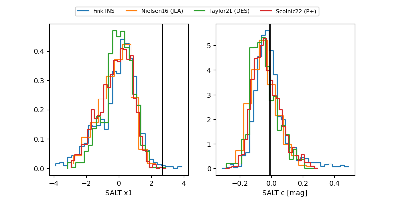

FINK: ZTF25abqyifz
Lasair: ZTF25abqyifz
ALeRCE: ZTF25abqyifz
ZTF25abqyifz (ztf,fink)
equatorial (ra, dec) = (355.7051,+10.10468)
galactic (l, b) = (96.5371,-49.21831)

last ztfg=20.54, ztfr=20.53
1 ztfg, 2 ztfr detections